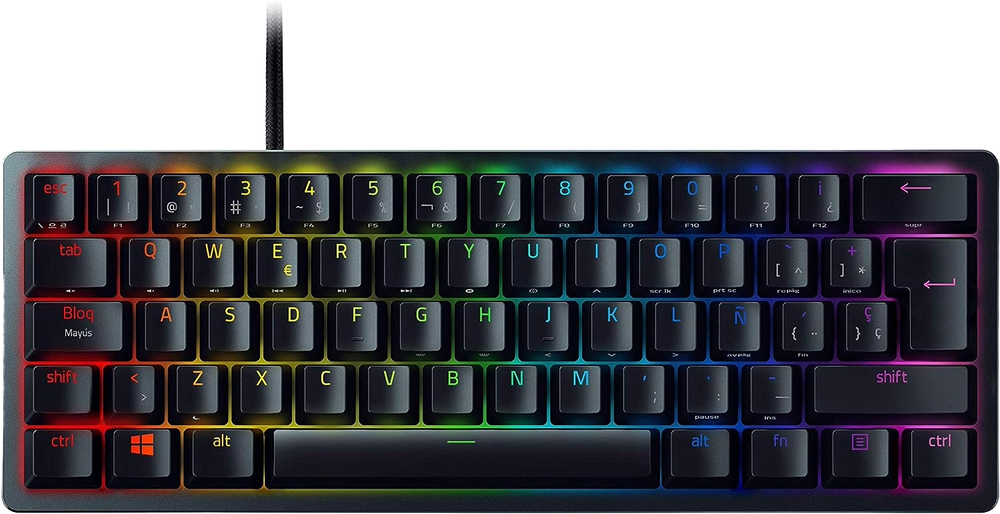

|

|
Razer Huntsman Mini
90,21€
Switches ópticos Razer: Ofrece un accionamiento rápido, ligero y fluido que los switches mecánicos, así como óptima
durabilidad ya que necesita menos piezas móviles que funcionan con menos fricción; Disponible en dos variantes: lineal
y con sonido click
Teclas de PBT de doble inyección con funciones secundarias impresas en el lateral: Diseñado para una óptima durabilidad,
no se va a deteriorar nunca con un acabado brillante ni se van a desgastar las etiquetas por el uso intenso; Funciones
secundarias impresas en el lateral para facilitar la referencia
|